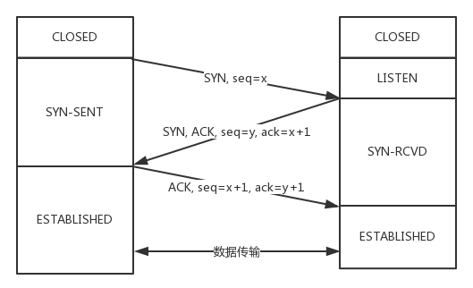

1. UDP协议#
1.1 UDP和TCP协议的区别#
| 类型 | 是否面向连接 | 传输可靠性 | 传输形式 | 传输效率 | 所需资源 | 应用场景 | 首部字节 |
|---|---|---|---|---|---|---|---|
| TCP | 面向连接 | 可靠 | 字节流 | 慢 | 多 | 要求通信数据可靠（文件传输） | 20-60 |
| UDP | 无连接 | 不可靠 | 数据报文段 | 快 | 少 | 要求通信速度高（视频直播） | 8字节 |
TCP是面向连接的，UDP无连接。
面向连接指，在互通之前，先建立连接，比如TCP三次握手，而UDP不会。建立连接是为了在客户端和服务端维护连接，而建立一定的数据结构来保证所谓的面向连接的特性。
TCP提供可靠支付，UDP不保证不丢失，不保证按顺序到达
TCP面向字节流，发送的时候发一个流。这是靠TCP自身的状态维护做的事情。
UDP继承了IP包的特性，不保证不丢失，不保证按顺序到达。
TCP具有拥塞控制，意识到丢包或者网络环境不好，会调整整个发送的速度的。UDP不做调整。
TCP有状态服务，精确记录了发送了没有，接收了没有，以及该接收哪一个了这样的信息。
如果MAC层定义了本地局域网的传输行为，IP层定义了整个网络端到端的传输行为，这两层基本定义了：网络传输是以包为单位的；二层叫帧，网络层叫包，传输层叫段。包单独传输，自行选段，在不同的设备封装解封装，不保证到达。
1.2 UDP 包头#
接收的机器通过看IP头里面的8位协议位来确定数据到底是通过TCP还是UDP来传的。
无论应用程序写的是用TCP传数据还是UDP传数据，都要监听一个端口。正是这个端口用来区分应用程序，无论是TCP还是UDP都有端口号，根据端口号来将数据交给相应的应用程序。

1.3 UDP 使用场景#
需要资源少，在网络情况比较好的内网，或者对于丢包不敏感的应用
DHCP 就是基于 UDP 协议的。一般的获取 IP 地址都是内网请求，而且一次获取不到 IP 又没事，过一会儿还有机会。我们讲过 PXE 可以在启动的时候自动安装操作系统，操作系统镜像的下载使用的 TFTP，这个也是基于 UDP 协议的。在还没有操作系统的时候，客户端拥有的资源很少，不适合维护一个复杂的状态机，而是因为是内网，一般也没啥问题。
- 不需要一对一沟通，建立连接，而是可以广播的应用
UDP 的不面向连接的功能，可以使得可以承载广播或者多播的协议。DHCP 就是一种广播的形式，就是基于 UDP 协议的，而广播包的格式前面说过了。
对于多播，我们在讲 IP 地址的时候，讲过一个 D 类地址，也即组播地址，使用这个地址，可以将包组播给一批机器。当一台机器上的某个进程想监听某个组播地址的时候，需要发送 IGMP 包，所在网络的路由器就能收到这个包，知道有个机器上有个进程在监听这个组播地址。当路由器收到这个组播地址的时候，会将包转发给这台机器，这样就实现了跨路由器的组播。
- 需要处理速度快，时延低，可以容忍少数丢包，但是要求即便网络拥塞，也毫不退缩，一往无前的时候
同理，UDP 简单、处理速度快，不像 TCP 那样，操这么多的心，各种重传啊，保证顺序啊，前面的不收到，后面的没法处理啊。不然等这些事情做完了，时延早就上去了。而 TCP 在网络不好出现丢包的时候，拥塞控制策略会主动的退缩，降低发送速度，这就相当于本来环境就差，还自断臂膀，用户本来就卡，这下更卡了。
当前很多应用都是要求低时延的，它们可不想用 TCP 如此复杂的机制，而是想根据自己的场景，实现自己的可靠和连接保证。例如，如果应用自己觉得，有的包丢了就丢了，没必要重传了，就可以算了，有的比较重要，则应用自己重传，而不依赖于 TCP。有的前面的包没到，后面的包到了，那就先给客户展示后面的嘛，干嘛非得等到齐了呢？如果网络不好，丢了包，那不能退缩啊，要尽快传啊，速度不能降下来啊，要挤占带宽，抢在客户失去耐心之前到达。
1.4 UDP的应用实例#
1.4.1 网页或者APP的访问#
原来访问网页和手机 APP 都是基于 HTTP 协议的。HTTP 协议是基于 TCP 的，建立连接都需要多次交互，对于时延比较大的目前主流的移动互联网来讲，建立一次连接需要的时间会比较长，然而既然是移动中，TCP 可能还会断了重连，也是很耗时的。而且目前的 HTTP 协议，往往采取多个数据通道共享一个连接的情况，这样本来为了加快传输速度，但是 TCP 的严格顺序策略使得哪怕共享通道，前一个不来，后一个和前一个即便没关系，也要等着，时延也会加大。
而QUIC (Quick UDP Internet Connections)是谷歌提出的一种基于UDP改进的通信协议，QUIC 在应用层上，会自己实现快速连接建立、减少重传时延，自适应拥塞控制，是应用层“城会玩”的代表。这一节主要是讲 UDP，QUIC 我们放到应用层去讲。
1.4.2 流媒体的协议#
现在直播比较火，直播协议多使用 RTMP，这个协议我们后面的章节也会讲，而这个 RTMP 协议也是基于 TCP 的。TCP 的严格顺序传输要保证前一个收到了，下一个才能确认，如果前一个收不到，下一个就算包已经收到了，在缓存里面，也需要等着。对于直播来讲，这显然是不合适的，因为老的视频帧丢了其实也就丢了，就算再传过来用户也不在意了，他们要看新的了，如果老是没来就等着，卡顿了，新的也看不了，那就会丢失客户，所以直播，实时性比较比较重要，宁可丢包，也不要卡顿的。
另外，对于丢包，其实对于视频播放来讲，有的包可以丢，有的包不能丢，因为视频的连续帧里面，有的帧重要，有的不重要，如果必须要丢包，隔几个帧丢一个，其实看视频的人不会感知，但是如果连续丢帧，就会感知了，因而在网络不好的情况下，应用希望选择性的丢帧。
还有就是当网络不好的时候，TCP 协议会主动降低发送速度，这对本来当时就卡的看视频来讲是要命的，应该应用层马上重传，而不是主动让步。因而，很多直播应用，都基于 UDP 实现了自己的视频传输协议。
1.4.3 实时游戏#
游戏有一个特点，就是实时性比较高。快一秒你干掉别人，慢一秒你被别人爆头，所以很多职业玩家会买非常专业的鼠标和键盘，争分夺秒。
因而，实时游戏中客户端和服务端要建立长连接，来保证实时传输。但是游戏玩家很多，服务器却不多。由于维护 TCP 连接需要在内核维护一些数据结构，因而一台机器能够支撑的 TCP 连接数目是有限的，然后 UDP 由于是没有连接的，在异步 IO 机制引入之前，常常是应对海量客户端连接的策略。
另外还是 TCP 的强顺序问题，对战的游戏，对网络的要求很简单，玩家通过客户端发送给服务器鼠标和键盘行走的位置，服务器会处理每个用户发送过来的所有场景，处理完再返回给客户端，客户端解析响应，渲染最新的场景展示给玩家。
如果出现一个数据包丢失，所有事情都需要停下来等待这个数据包重发。客户端会出现等待接收数据，然而玩家并不关心过期的数据，激战中卡 1 秒，等能动了都已经死了。游戏对实时要求较为严格的情况下，采用自定义的可靠 UDP 协议，自定义重传策略，能够把丢包产生的延迟降到最低，尽量减少网络问题对游戏性造成的影响。
1.4.4 物联网#
一方面，物联网领域终端资源少，很可能只是个内存非常小的嵌入式系统，而维护 TCP 协议代价太大；另一方面，物联网对实时性要求也很高，而 TCP 还是因为上面的那些原因导致时延大。Google 旗下的 Nest 建立 Thread Group，推出了物联网通信协议 Thread，就是基于 UDP 协议的。
1.4.5 移动通信领域#
4G网络中移动流量上网的数据面对的协议GTP-U就是基于UDP的。
2. TCP协议#
更倾向于网络环境是恶劣的，丢包，乱序，重传，拥塞都是常有的事情，很有可能送达不了，所以要从算法层面来保证可靠性。
2.1 TCP包头格式#

- 源端口号-16
- 目的端口号-16
源端口号和目标端口号，来确定从哪发送，要发送到哪里去。
- 序号-32
给包编序号，解决包的乱序问题
- 确认序号-32
发出去的包要有确认，来确认对方收到了。如果没有收到就需要重发，直到送达为止
- 首部长度-4
- 保留位-6
下述的状态位的存在是因为TCP是面向连接的，双方要维护连接的状态，这些带状态位的包的发送，会引起双方的状态变更。
- URG
- ACK
回复
- PSH
- RST
重新连接
- SYN
发起一个连接
- FIN
结束连接
- 窗口大小-16
TCP要做流量控制，通信双方各声明一个窗口，标识自己当前的处理能力，保持接收和处理的速度适宜。
- 校验和-16
- 紧急指针-16
- 选项
- 数据
2.2 TCP三次握手#
客户端–发送带有 SYN 标志的数据包–一次握手–服务端
服务端–发送带有 SYN/ACK 标志的数据包–二次握手–客户端
传回SYN的原因，确保就是传过来的那个信息
客户端–发送带有带有 ACK 标志的数据包–三次握手–服务端
第一次握手：Client 什么都不能确认；Server 确认了对方发送正常
第二次握手：Client 确认了：自己发送、接收正常，对方发送、接收正常；Server 确认了：自己接收正常，对方发送正常
第三次握手：Client 确认了：自己发送、接收正常，对方发送、接收正常；Server 确认了：自己发送、接收正常，对方发送接收正常
三次握手除了建立双方的连接以外，还要解决TCP包的序号问题。每个连接都要有不同的序号，这个序号队列的起始序号是随着时间变化的，这样子可以避免有一个包到的有一点晚的问题。
我们在做设计的时候，会开启keepalive机制，即使没有真实的数据包，也会有探活包来保证连接的保持。

一开始，客户端和服务端都处于 CLOSED 状态。先是服务端主动监听某个端口，处于 LISTEN 状态。然后客户端主动发起连接 SYN，之后处于 SYN-SENT 状态。服务端收到发起的连接，返回 SYN，并且 ACK 客户端的 SYN，之后处于 SYN-RCVD 状态。客户端收到服务端发送的 SYN 和 ACK 之后，发送 ACK 的 ACK，之后处于 ESTABLISHED 状态，因为它一发一收成功了。服务端收到 ACK 的 ACK 之后，处于 ESTABLISHED 状态，因为它也一发一收了。
2.3 TCP四次挥手#
以下是四次挥手的状态时序图

断开的时候，我们可以看到，当 A 说“不玩了”，就进入 FIN_WAIT_1 的状态，B 收到“A 不玩”的消息后，发送知道了，就进入 CLOSE_WAIT 的状态。
A 收到“B 说知道了”，就进入 FIN_WAIT_2 的状态，如果这个时候 B 直接跑路，则 A 将永远在这个状态。TCP 协议里面并没有对这个状态的处理，但是 Linux 有，可以调整 tcp_fin_timeout 这个参数，设置一个超时时间。
如果 B 没有跑路，发送了“B 也不玩了”的请求到达 A 时，A 发送“知道 B 也不玩了”的 ACK 后，从 FIN_WAIT_2 状态结束，按说 A 可以跑路了，但是最后的这个 ACK 万一 B 收不到呢？则 B 会重新发一个“B 不玩了”，这个时候 A 已经跑路了的话，B 就再也收不到 ACK 了，因而 TCP 协议要求 A 最后等待一段时间 TIME_WAIT，这个时间要足够长，长到如果 B 没收到 ACK 的话，“B 说不玩了”会重发的，A 会重新发一个 ACK 并且足够时间到达 B。
A 直接跑路还有一个问题是，A 的端口就直接空出来了，但是 B 不知道，B 原来发过的很多包很可能还在路上，如果 A 的端口被一个新的应用占用了，这个新的应用会收到上个连接中 B 发过来的包，虽然序列号是重新生成的，但是这里要上一个双保险，防止产生混乱，因而也需要等足够长的时间，等到原来 B 发送的所有的包都死翘翘，再空出端口来。
等待的时间设为 2MSL，MSL是Maximum Segment Lifetime, 报文最大生存时间。，它是任何报文在网络上存在的最长时间，超过这个时间报文将被丢弃。因为 TCP 报文基于是 IP 协议的，而 IP 头中有一个 TTL 域，是 IP 数据报可以经过的最大路由数，每经过一个处理他的路由器此值就减 1，当此值为 0 则数据报将被丢弃，同时发送 ICMP 报文通知源主机。协议规定 MSL 为 2 分钟，实际应用中常用的是 30 秒，1 分钟和 2 分钟等。
2.4 TCP状态机#